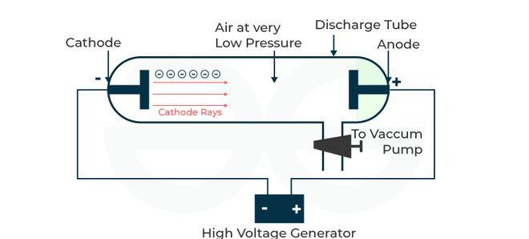
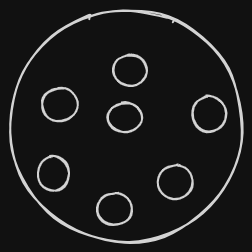

- William Crookes 1875
- William Concord 1896
- Antoine Henri Becquerel 1897
- Joseph John “J.J.” Thomson 1897
Tubo Rayos catodicos
Anodo y Catodo
Antoine Henri Becquerel 1896
Si el material radioactivo se acerca a una placa fotográfica Rayos X
La primer radiografia del mundo no fue medica
Del rayo, con los imanes salen 3 rayos (similar a el prisma con la luz):
- Rayos Alfa (+) Debil
- Rayos Gamma (Neutral) Fuerte
- Rayos Beta (-) Intermedio Joseph John 1897
Descubrimiento del Electron de manera practica (ya anteriormente se tomaba en cuenta en idea). Simbolo del electron:

Modelo atomico del budin con pasas

Ernest Rutherford 1911
Dispersion de particulas alfa por nucleos de atomos de oro
Se disparó rayos alfa a una delgada lamina de oro y los rayos rebotaban
Rutherford hizo el modelo atómico más común en la actualidad (en forma), como el sistema solar y creo la fisica nuclear
Nucleo positivo y cargas negativas
Planck
Cuerpo negro:
Objeto teórico Ideal
Teoría de Planck
- Max Karl Ernst Ludwig Planck físico alemán
- Presentó el trabajo llamado “Sobre la Teoría de la ley de distribución de energía en el espectro continuo”, que representó el nacimiento de la teoría cuántica.
- La constante de Planck es representada como
La ecuación de la energía en onda según Planck es:
Siendo que:
- = constante de planck que es:
- = la frecuencia de onda
- = velocidad de la luz
- = longitud de onda
Dato
La energía no se transmite de manera continua, sino en paquetes
Dato
Ecuación de la energía de planck es la luz comportandose como onda mientras la ecuación de Einstein es comportandose como partícula Partícula (Einstein): Onda (Planck):
Espectro de la luz
-
Espectro Visible
-
Espectro de Hidrógeno
-
Espectro del Mercurio
-
Espectro del Sodio
Efecto Fotoeléctrico
Se atribuye el descubrimiento del efecto fotoeléctrico a Heinrich Hertz en 1887
La energía cinética de los fotoelectrones son independientes de la intensidad de la luz, depende solamente de la frecuencia o longitud de onda de la radiación incidente
Espectros de Emisión
Se dice que la luz vlanca posee un esptro continuo porque se pasa de un color al otro sin interrupcción en la sucesión de colores
Cuando se irradia la materia con radiación electromagnética, la materia puede absorber, y posteriormente emitir, ciertas longitudes de onda, o frecuencias en relación con su estructura interna
Cada elemento tiene un espectro característico
Experimento del prisma
Cuando la luaz pasa por un prima, cada longitud pasa a diferente velocidad, lo que hace que al salir queden separados